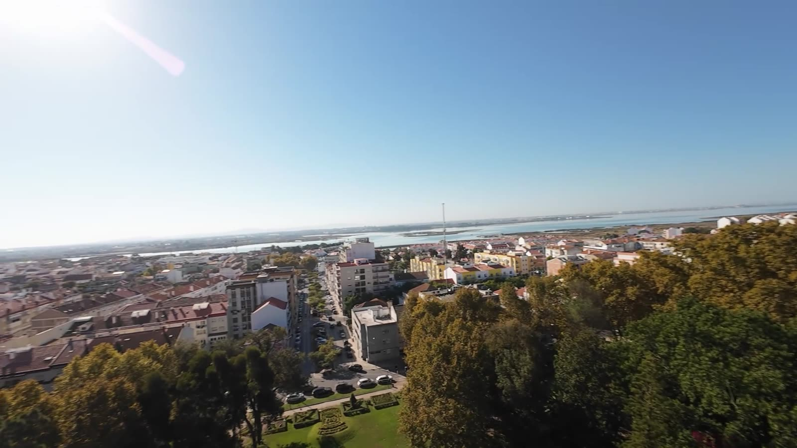

Trazer a tua experiência
Diz-nos a tua área e onde podes contribuir.
Quero contribuirAgenda do Montijo
Site em construção
O novo site do Acreditar no Montijo! está a ser construído. Aqui por baixo podes ver como está a ficar.
Ver como está a ficarCandidatura à Comissão Política Concelhia do PSD Montijo
Empresas, um centro renovado e uma aposta clara na juventude. Uma candidatura que quer trazer novos quadros da sociedade civil para o PSD e para o Montijo.
O PSD é grande no Montijo. Precisa outra vez de uma liderança forte e de uma equipa trabalhadora. Queremos atrair altos quadros da sociedade civil, pessoas com experiência profissional e vontade de servir, para darem rumo ao PSD e ao Montijo.
Acreditar no Montijo!

Proposta da candidatura
Propomos recuperar a antiga sede do PSD, no n.º 23 da Praça da República, e reconstruí-la, para o PSD voltar a ter casa no centro do Montijo.
Fonte sobre a antiga sede: O Setubalense, 6 de dezembro de 2024.
Em 2021, o PSD ficou a pouco mais de três centenas de votos de ganhar a Câmara. Em 2025, teve o pior resultado das últimas quatro eleições autárquicas, na Câmara, na Assembleia Municipal e nas juntas de freguesia.
2025 em quatro números
Fontes: resultados oficiais, via Wikipédia (2013 a 2021) e RTP (2025, após a recontagem). O PSD concorreu sozinho em 2013, com o CDS em 2017, com o CDS e a Aliança em 2021 e com a IL em 2025.
As medidas são propostas da pré-moção, abertas ao debate com militantes e quadros da sociedade civil.
Um Montijo ligado às empresas, que as ouve, as atrai e cria condições para que fiquem e cresçam no concelho.
Número de empresas ouvidas e de propostas acolhidas no programa autárquico, publicado no fim de cada ano do mandato.
A renovação do centro da cidade como prioridade, com comércio de proximidade e espaço público com vida.
Número de lojas abertas no centro face ao levantamento inicial, medido todos os anos.
Dar aos jovens do concelho razões para ficar, participar e assumir responsabilidades. Um projeto ganha força quando junta gerações: a Universidade Sénior, as IPSS e o Conselho Municipal de Juventude podem trabalhar lado a lado.
Percentagem de jovens até aos 30 anos nos órgãos da concelhia e nas listas autárquicas de 2029.
Queremos atrair altos quadros da sociedade civil, pessoas com experiência profissional e vontade de servir, para darem rumo ao PSD e ao Montijo.
Número de novos militantes e de independentes envolvidos no Gabinete de Estudos, publicado no fim de cada ano.
O resultado do PSD em cada assembleia de freguesia, de 2013 a 2025, e quem ganhou a junta. Escolhe uma freguesia para ver todos os resultados.
Entre 2021 e 2025, o PSD desceu em quatro das cinco freguesias. A maior queda foi em Pegões, de 39,6% para 8,7%. Canha foi a exceção: o PSD voltou a ganhar a junta, como em 2013.
Assembleias de freguesia: RTP (2013 e 2017), Wikipédia (2021) e SGMAI via Observador (2025). População: INE, Censos 2021. Fotografias: Wikimedia Commons, ver créditos.
41 404habitantes em 2021
Profissional, empresário, estudante ou militante de longa data.
Diz-nos a tua área e onde podes contribuir.
Quero contribuirA inscrição é online. Se precisares de um proponente, ajudamos.
Como aderirSó vota quem tem as quotas pagas.
Saber mais sobre quotasOuvir militantes e quadros da sociedade civil sobre as propostas.
Estamos aquiVersão final, com medidas, prazos e indicadores.
Votam os militantes com as quotas em dia.
Projeto, rosto e obra para o Montijo.

Traz a tua experiência para a moção. Diz-nos a tua área profissional e onde podes ajudar.